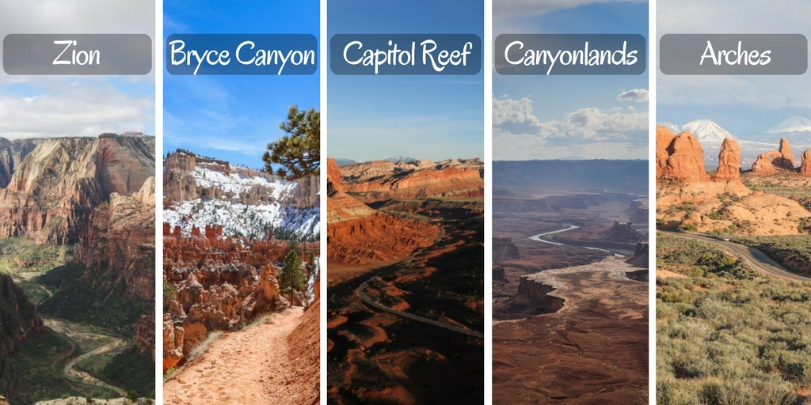
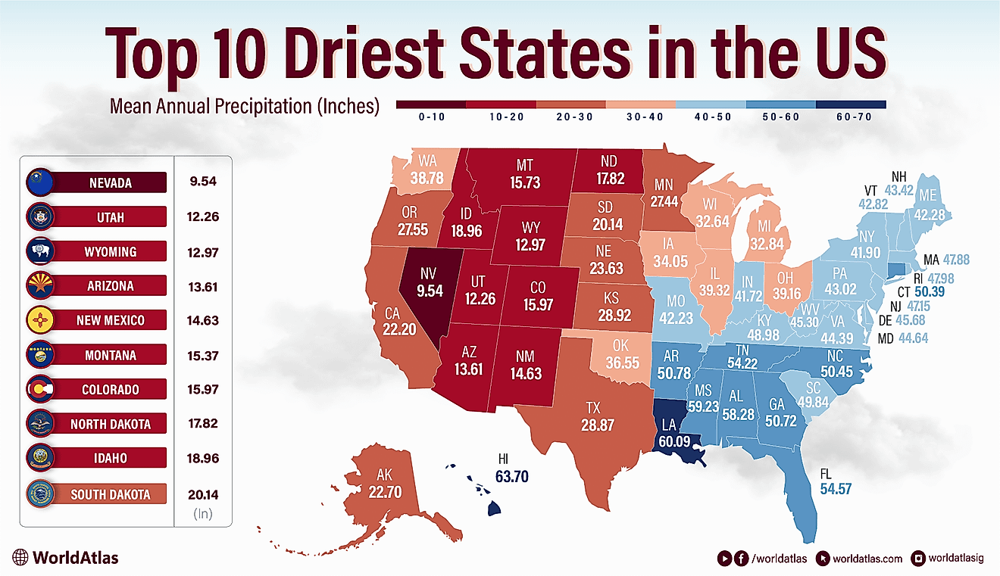

In Utah we have many National Parks for examples Zions, Canyonlands, Bryce Canyon etc.
The second driest state in the US known for its sun-drenched, semi-arid environment.
Influenced by the, Church of Jesus Christ of Latter-day Saints, and a strong, working-class heritage.

